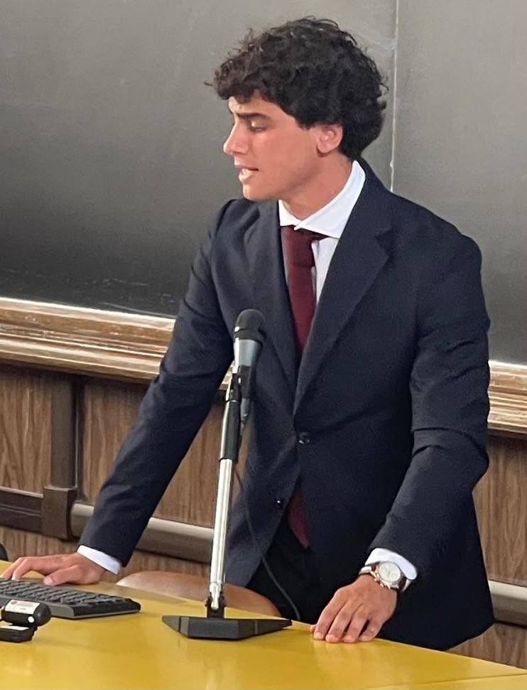

gajsihspIf you would like to know more about my background, you can consult my brief CV here:
View my short CVBeyond my academic curriculum, I am deeply interested in the research of advanced mathematical models and the theoretical foundations of Artificial Intelligence. My core areas of investigation include:
A selection of my recent implementations and research reports: